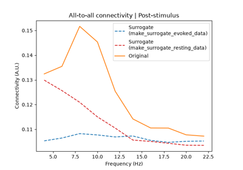

mne_connectivity.make_surrogate_data#
- mne_connectivity.make_surrogate_data(data, n_shuffles=1000, rng_seed=None, return_generator=True)[source]#
Create surrogate data for a null hypothesis of connectivity.
- Parameters:
- data
EpochsSpectrum|EpochsTFR The Fourier coefficients to create the null hypothesis surrogate data for. Can be generated from
mne.Epochs.compute_psd()ormne.Epochs.compute_tfr()withoutput='complex'.Note
Storing Fourier coefficients in
mne.time_frequency.EpochsSpectrumobjects requiresmne >= 1.8.- n_shuffles
int(default 1000) The number of surrogate datasets to create.
- rng_seed
int|None(defaultNone) The seed to use for the random number generator. If
None, no seed is specified.- return_generatorbool (default
True) Whether or not to return the surrogate data as a generator object instead of a list. This allows iterating over the surrogates without having to keep them all in memory.
- data
- Returns:
- surrogate_data
listofEpochsSpectrumorEpochsTFR The surrogate data for the null hypothesis with
n_shufflesentries. Returned as a generator ifreturn_generator=True.
- surrogate_data
Notes
Surrogate data is generated by randomly shuffling the order of epochs, independently for each channel. This destroys the covariance of the data, such that connectivity estimates should reflect the null hypothesis of no genuine connectivity between signals (e.g., only interactions due to background noise) [1].
For the surrogate data to properly reflect a null hypothesis, the data which is shuffled must not have a temporal structure that is consistent across epochs. Examples of this data include evoked potentials, where a stimulus is presented or an action performed at a set time during each epoch. Such data should not be used for generating surrogates, as even after shuffling the epochs, it will still show a high degree of residual connectivity between channels. As a result, connectivity estimates from your surrogate data will capture genuine interactions, instead of the desired background noise. Treating these estimates as a null hypothesis will increase the likelihood of a type II (false negative) error, i.e., that there is no significant connectivity in your data.
Appropriate data for generating surrogates includes data from a resting state, inter-trial period, or similar. Here, a strong temporal consistency across epochs is not assumed, reducing the chances that connectivity information of interest is captured in your surrogate connectivity estimates.
In situations where you want to assess whether evoked data has significant connectivity, you can generate your surrogate connectivity estimates from non-evoked data (e.g., rest data, inter-trial data) and compare this to your true connectivity estimates from the evoked data.
Regardless of whether you are working with evoked or non-evoked data, you should always compare true and surrogate connectivity estimates from epochs of the same duration. This will ensure that spectral information is captured with the same accuracy in both sets of connectivity estimates. Ideally, you should also compare true and surrogate connectivity estimates from the same number of epochs to avoid biases from noise (fewer epochs gives noisier estimates) or finite sample sizes (e.g., in coherency, phase-locking value, etc… [2]).
Added in version 0.8.
References
Examples using mne_connectivity.make_surrogate_data#

Determine the significance of connectivity estimates against baseline connectivity